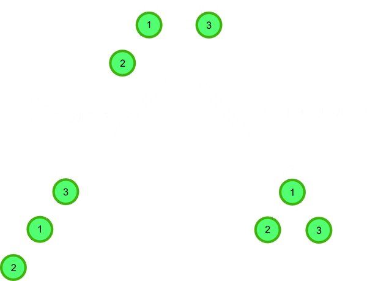
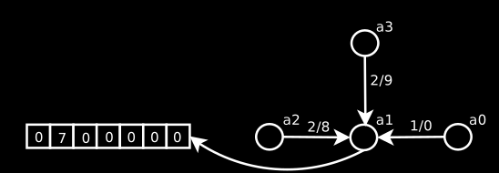

<!doctype html>
<html>
<head>
    <meta charset="utf-8">
    <meta name="viewport" content="width=device-width, initial-scale=1.0, maximum-scale=1.0, user-scalable=no">

    <title>Advanced Data Structures 4</title>

    <link rel="stylesheet" href="css/reveal.css">
    <link rel="stylesheet" href="css/theme/black.css">

    <!-- Theme used for syntax highlighting of code -->
    <link rel="stylesheet" href="lib/css/zenburn.css">

    <!-- Printing and PDF exports -->
    <script>
        var link = document.createElement('link');
        link.rel = 'stylesheet';
        link.type = 'text/css';
        link.href = window.location.search.match(/print-pdf/gi) ? 'css/print/pdf.css' : 'css/print/paper.css';
        document.getElementsByTagName('head')[0].appendChild(link);
    </script>
    <style>
        .info {
            display: inline-block;
        }

        .textclass {
            float: left;
            width: 500px;
            height: 227px;
            line-height: 227px;
        }

        .imageclass {
            float: right;
            width: 200px;
            height: 227px;
        }
    </style>
</head>
<body>
<div class="reveal">
    <div class="slides">
        <!-------------------------------------------------------------------------------------------------->
        <section data-markdown="" data-background="img/ads-00-background.png">
            <script type="text/template">
                # Advanced data structures
                ## part 4
                <div class="fragment fade-up info">
                    <span class="textclass">Nick Linker</span>
                    
                </div>
                <!--nlinker.github.io/presentations/06_advanced-data-structures-4-->
            </script>
        </section>

        <section data-markdown="">
            <script type="text/template">
                ### Other data structures
                1. Persistent union-find
                1. Heaps, Binomial and Fibonacci heaps
                1. Bloom and Cuckoo filters
            </script>
        </section>

        <!-- ================== Persistent Union-find ================== -->
        <section data-markdown="">
            <script type="text/template">
                ### Union-find
                1. Key role in algorithms, e.g. minimum spanning tree
                2. Other classification problems
                3. Naïve persistent implementation is very inefficient
                ----
                - [Conchon, Filli&#226;tre _A Persistent Union-Find Data Structure_](https://www.lri.fr/~filliatr/ftp/publis/puf-wml07.pdf)
                - [Imperative Disjoint-set data structure](https://en.wikipedia.org/wiki/Disjoint-set_data_structure)
                - [Kruskal’s MST & Union-Find](https://www.cs.cmu.edu/~ckingsf/class/02713-s13/lectures/lec03-othermst.pdf)
                - [Haskell disjoint-sets](https://github.com/myegorov/disjoint-sets)
            </script>
        </section>
        <section data-markdown="">
            <script type="text/template">
                ### Union-find

                `{0, 1, 3, 5, 7} {2, 4, 6}`

                
                <!---->
                
            </script>
        </section>
        <section data-markdown="">
            <script type="text/template">
                ### Imperative Union-find

                `1.` Path compression optimization

                ```scala
                def find(x) =
                  if (parent[x] != x)
                    parent[x] = find (parent[x])
                  parent[x]
                ```
                
            </script>
        </section>
        <section data-markdown="">
            <script type="text/template">
                ### Imperative Union-find

                `2.` Rank optimization

                Rank is approximation of the size of the class.
                ```scala
                if (rank[x_root] > rank[y_root])
                  parent[y_root] = x_root
                else
                  parent[x_root] = y_root
                ```

                
            </script>
        </section>
        <section data-markdown="">
            <script type="text/template">
                ### Imperative Union-find

                Optimizations:

                `2.` Rank

                ```scala
                def union (x, y) =
                  val x_root = find(x)
                  val y_root = find(y)
                  if (x_root == y_root)
                    return x_root
                  /// from the previous slide ///
                  if (rank[x_root] > rank[y_root])
                    parent[y_root] = x_root
                  else
                    parent[x_root] = y_root
                  ///////////////////////////////
                  if (rank[x_root] == rank[y_root])
                    rank[y_root] = rank[y_root] + 1
                ```
            </script>
        </section>
        <section data-markdown="">
            <script type="text/template">
                ### Persistent Union-find

                ```scala
                class UnionFind {
                  def create(n): UnionFind
                  def union(this, x, y): UnionFind
                  def find(this, x): Int
                }
                ```
                Persistent array
                ```scala
                class PArray {
                  def create(n, e): PArray
                  def set(this, i, x): PArray
                  def get(this, i): Int
                  def reroot(this): Unit
                }
                ```
            </script>
        </section>
        <section data-markdown="">
            <script type="text/template">
                ### Persistent array, idea
                1. Use a usual array for the last version
                2. Indirections for previous versions
                3. Rerooting
                4. `PArray` is a mutable pointer to one of...

                ```haskell
                type PArray a = IORef (AData a)
                data AData a = Arr (IOArray Int a)   -- current array, or
                             | Diff Int a (PArray a) -- difference list
                ```

                
                
            </script>
        </section>
        <section data-markdown="">
            <script type="text/template">
                ### Persistent array

                `reroot`

                ```scala
                def reroot(arr1: PArray): Unit = {
                  arr1 match
                    Arr(a) => ()
                    Diff(i, val, arr2) =>
                      reroot(arr2)
                      arr2 match
                        Arr(a)  =>
                          oldVal = a[i]
                          a[i] = val
                          arr1 = Arr(a) /// !!!
                          arr2 = Diff(i, oldVal, arr)
                        Diff(_,_,_) => error("Invariant violation")
                }
                ```
            </script>
        </section>
        <section data-markdown="">
            <script type="text/template">
                ### Persistent array

                `get`

                ```scala
                def get(arr: PArray, i: Int): Int = {
                  arr match
                    Arr(a)  => a[i]
                    Diff(_,_,_) =>
                      reroot(arr)
                      arr match
                        Arr(a) => a[i]
                        Diff(_,_,_) => error("Invariant violation")
                }
                ```
            </script>
        </section>
        <section data-markdown="">
            <script type="text/template">
                ### Persistent array

                `set`

                ```scala
                def set(arr: PArray, i: Int, x: Int): PArray = {
                  arr match
                    case Arr(a) =>
                      reroot(arr)
                      old = a(i)
                      a(i) = x
                      arr = Diff(i, old, arr)
                    case Diff(_,_,_) =>
                      arr = Diff(i, x, arr)
                }
                ```
            </script>
        </section>
        <section data-markdown="">
            <script type="text/template" data-transition="none">
                ### Persistent union find

                Computational results (from the paper)

                `p` = union/find ratio, `n` = number of nodes

                | `p`, `n`   | 5%, 500k | 10%, 500k | 15%, 500k |
                |------------|----------|-----------|-----------|
                | Tarjan     | 12.50    | 12.90     | 13.20     |
                | Persistent | 11.30    | 14.40     | 17.80     |
                | Naïve      | 37.50    | 63.80     | > 600.0   |
            </script>
        </section>

        <!-- ================== Heaps ================== -->
        <section data-markdown="">
            <script type="text/template">
                ### Priority queue applications

                - A* search
                - Heapsort
                - Online median
                - Huffman encoding
                - Prim’s MST algorithm
                - Discrete event-driven simulation
                - Network bandwidth management
                - Dijkstra’s shortest-paths algorithm
            </script>
        </section>
        <section data-markdown="">
            <script type="text/template">
                ### Heap

            </script>
        </section>


        <!-- ================== Bloom and Cuckoo filter ================== -->
        <section data-markdown="">
            <script type="text/template">
                ### Bloom filters

                - Probabilistic data structure
                    1. if the element exists, then return true
                    1. if it does not exist, than return maybe true

                ```scala
                def put(k: Key): Unit
                def get(k: Key): Bool
                ```
            </script>
        </section>
        <section data-markdown="" data-transition="none">
            <script type="text/template">
                ### Bloom filters

                
            </script>
        </section>
        <section data-markdown="" data-transition="none">
            <script type="text/template">
                ### Bloom filters

                - `p` false positive probability
                - `k` is the number of hash functions
                - `n` is the size of the input set
                - `m` is the size of the Bloom filter in bits

                Bits per element vs. false positive probability
                
            </script>
        </section>
        <section data-markdown="" data-transition="none">
            <script type="text/template">
                ### Bloom filters

                Given `p` and expected number of `n`, calculate `m`.
                1. From the statistics the probability of false positive
                2. The optimal value for `k`
                3. Little exercise in algebra

                
                
                

                E.g. n = 1000000, p = 0.01

                => m = 9_585_059 (1.14MB), k = 7

                [bloom filter calculator](https://hur.st/bloomfilter)
            </script>
        </section>
        <section data-markdown="" data-transition="none">
            <script type="text/template">
                ### Cuckoo filters

                1. `k` hash functions and `k` arrays
                1. new inserted values displace old ones
                1. supports `delete` as well

            </script>
        </section>
        <section data-markdown="" data-transition="none">
            <script type="text/template">
                ### Cuckoo filters
                Cuckoo hashing, general idea
                
            </script>
        </section>
        <section data-markdown="" data-transition="none">
            <script type="text/template">
                ### Cuckoo filters
                Cuckoo hashing, general idea
                
            </script>
        </section>
        <section data-markdown="" data-transition="none">
            <script type="text/template">
                ### Cuckoo filters
                Cuckoo hashing, general idea
                
            </script>
        </section>
        <section data-markdown="" data-transition="none">
            <script type="text/template">
                ### Cuckoo filters
                Cuckoo hashing, general idea
                
            </script>
        </section>
        <section data-markdown="" data-transition="none">
            <script type="text/template">
                ### Cuckoo filters
                Cuckoo hashing, general idea
                
            </script>
        </section>
        <section data-markdown="" data-transition="none">
            <script type="text/template">
                ### Cuckoo filters
                Practical implementation

                

                **Q** Do you see the problem?
            </script>
        </section>
        <section data-markdown="" data-transition="none">
            <script type="text/template">
                ### Cuckoo filters

                1. Good performance if the load is under 50%
                1. 3-cuckoo filters help increase load to 91%
                1. Blocked cuckoo - more than one key per bucket

                [Cuckoo Filter: Practically Better Than Bloom](http://dl.acm.org/citation.cfm?doid=2674005.2674994)
                [Probabilistic Filters By Example](https://bdupras.github.io/filter-tutorial/)
            </script>
        </section>

        <section data-markdown="">
            <script type="text/template">
                ### Useful links

                #### MUST SEE!
                - [Erik Demaine, 6.851: Advanced Data Structures](http://courses.csail.mit.edu/6.851/spring12/lectures/)

                #### Others
                - [Finger Trees: A Simple General-purpose Data Structure](http://www.staff.city.ac.uk/%7Eross/papers/FingerTree.html)
                - [Andrew Gibiansky - Finger Trees](http://andrew.gibiansky.com/blog/haskell/finger-trees/)
                - [Kruskal’s MST & Union-Find](https://www.cs.cmu.edu/~ckingsf/class/02713-s13/lectures/lec03-othermst.pdf)
                - [How to find right parameters for bloom filters](https://corte.si/posts/code/bloom-filter-rules-of-thumb/index.html)
                - [Cuckoo Filter: Practically Better Than Bloom](http://dl.acm.org/citation.cfm?doid=2674005.2674994)
                - [Probabilistic Filters By Example](https://bdupras.github.io/filter-tutorial/)
                - [Bloom filter calculator](https://hur.st/bloomfilter)

            </script>
        </section>

        <section data-markdown="">
            <script type="text/template" >
                ### Questions?
                
            </script>
        </section>

        <!-------------------------------------------------------------------------------------------------->
    </div>
</div>

<script src="lib/js/head.min.js"></script>
<script src="js/reveal.js"></script>

<script>
    // More info about config & dependencies:
    // - https://github.com/hakimel/reveal.js#configuration
    // - https://github.com/hakimel/reveal.js#dependencies
    Reveal.initialize({
        dependencies: [
            {src: 'plugin/markdown/marked.js'},
            {src: 'plugin/markdown/markdown.js'},
            {src: 'plugin/notes/notes.js', async: true},
            {
                src: 'plugin/highlight/highlight.js',
                async: true,
                callback: function () { hljs.initHighlightingOnLoad(); }
            }
        ]
    });
</script>
</body>
</html>
